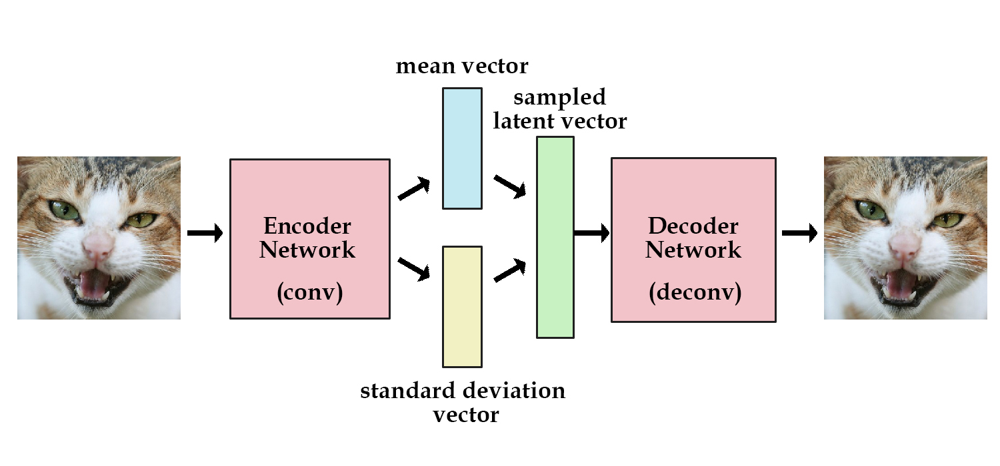

GoogleNet Image Classifier
Publication: Going Deeper with Convolution
GoogleNet is a cheap and relatively accurate 1000 class image classifier first published in 2014
| Accuracy | ILSVRC 2014 dataset: Accuracy (Top-5) 93.33% |
|---|---|
| ILSVRC 2012 dataset: Accuracy (Top-5) 89.06% | |
| Model Size | 27Mb in npy format |
| Architecture |
9 identical blocks of parallel convolutional neural network layers with downsampling, shown below 
|
| Advantage |
|
| Disadvantage |
|
Model code in Tensorflow: GoogleNet Code
Pre-trained model in npy format: GoogleNet Model
Output label lookup dictionary: Imagenet Classes
The model is converted into Tensorflow using ethereon's caffe-tensorflow library. The converted network requires the library to initialize network structure.
ResNet50 Image Classifier
Publication: Deep Residual Learning for Image Recognition
ResNet50 is a highly accurate model published by Microsoft research. It's gain in accuracy comes at a cost of computational expenses. Both its model memory cost and execution time exceed those of GoogleNet.
| Accuracy | ILSVRC 2012 dataset: Accuracy (Top-5) 92.02% |
|---|---|
| Model Size | 100Mb in npy format |
| Architecture |
50 layers of similar blocks with "bypass connections" shown as the x identity below 
Shortcut path serves as a model simplifier and provides the benefit of simple models in a complex network. If shortcut path is dominant, the layers between this shortcut are essentially ignored, reducing the complexity of the model in effect. |
| Advantage |
|
| Disadvantage |
|
Model code in Tensorflow: ResNet Code
Pre-trained model in npy format: ResNet Model
Output label lookup dictionary: Imagenet Classes
The model is converted into Tensorflow using ethereon's caffe-tensorflow library. The converted network requires the library to initialize network structure.
VGG16 Image Classifier
Publication: Very Deep Convolutional Networks for Large-Scale Image Recognition
VGG is published by researchers at University of Oxford. The highlight is its simplicity in architecture. Majority of the network consists of convolution layers and dropout layers in simple cascading fashion.
| Accuracy | ILSVRC 2012 dataset: Accuracy (Top-5) 89.88% |
|---|---|
| Model Size | 540Mb in npy format |
| Architecture |
|
| Advantage |
|
| Disadvantage |
|
Model code in Tensorflow: VGG16 Code
Pre-trained model in npy format: VGG16 Model (540Mb)
Output label lookup dictionary: Imagenet Classes
The model is converted into Tensorflow using ethereon's caffe-tensorflow library. The converted network requires the library to initialize network structure.
Image Captioning: Show, (Attend) and Tell
Publication: Show and Tell: A Neural Image Caption Generator
Publication: Show, Attend and Tell: Neural Image Caption Generation with Visual Attention
Google's original "Show and Tell" network builds a LSTM recurrent network on top of GoogleNet Image classifier to generate captions from images. The CNN googlenet interprets the image and LSTM translate the image context into sentences.
Subsequent "show, attend and tell" introduces a attention vector to tell the LSTM where to look at within the CNN output. This attention vector itself is generated from fully connected neural net and is trainined together with the system. Evaluation results suggest small advantage beyond original "Show and Tell" algorithm

| Accuracy | Show and Tell - MSCOCO dataset: BLUE-4: 24.6, METEOR: 23.7 |
|---|---|
| Show, Attend and Tell - MSCOCO dataset: BLUE-4: 25.0, METEOR: 23.04 | |
| Architecture |
|
| Advantage |
|

TextRank - Article Summarization & Keyword Extraction
Publication: TextRank: Bringing Order into Texts
TextRank applied PageRank-style graph ranking algorithm on natural language articles. Through tokenization of individual words as vertex and using co-occurance as unweighted connection, text rank graph can produce a list of keywords from a passage.
The author also achieved good performance in article summarization if the algorithm uses whole sentence as vertex and use "sentence similarity" as weighted connection.
| Accuracy | TextRank outperforms many previous approaches in this area (e.g. Hulth, 2003) |
|---|---|
| Architecture |
|
| Advantage |
|
| Disadvantage |
|
SyntaxNet: Neural Models of Syntax
Google's Open-Source Model & Code: SyntaxNet: Neural Models of Syntax
Part of speech (POS) tagging aims at parsing the dependency structure of a sentence to understand which word is root, action and objectives. SyntaxNet is a Google open-sourced neural network solution achieving state-of-art accuracy in POS challenges.

As illustrated in the above picture, the model concatenates feature embeddings, run through hidden layer, and output the softmax probability for the next optimal action to take on the sequence graph.
The mathematics in Globally Normalized Transition-Based Neural Networks is critical in training a high accuracy syntax net.
In summary, the paper proves
- Computing global normalization loss function is strictly better (more expressive) than local normalization loss function.
- Global normalization: how likely is this sequence (of tagging), out of all possible sequences, the golden sequence?
- Local normalization: how likely is this next action (tagging), out of all possible next actions, leads the current sequence to the golden sequence?
- An efficient way to compute the global normalization function. Specifically, the computation can be optimized through beam searching only the golden path and early termination - perform backpropregation as soon as the system prediction deviates from the golden path, and stops there.
GAN: Generative Adversarial Network
Publication: Generative Adversarial Networks
Generative models are useful for building AI that can self-compose images, music and other works. Building a generative model is challenging because it is hard to define what is the best output (training target), and find a working cost function.
GAN introduces a new paradigm of training a generative model, in the following way:
- Build a generative model neural network
- Build a discriminator network that tries to tell if its input (e.g. an image) is artificially generated or real.
In the paper, the author used fully connected layers for both networks and demonstrated good performance in generating realistic looking images.
The second network can be trained via backpropagation because we know for each image if it is generated or not. During the training of first netwrok, or generative network, we can lock the second network and use backpropagation to tell the first network to go into the direction of making the second network say it is more real than generated. Conceptually, the second network is providing advice for the first network on how to make its output more realistic and thus named as Adversarial network.
The following image demonstrated this process visually

- Back dot: real output
- Grean line: generative network output
- Blue line: discriminator network output (0.5 means it believe the work has equal probability to be real or generated)
Although as Karpathy noted on his experiment, "things are not quite as nice in practice".
Variational Autoencoder
Publication: Original VAE paper (2013)
Publication: Disentangled VAE's (DeepMind 2016)
Video: Variational Autoencoders Walk-through
Variational autoencoder differs from a traditional neural network autoencoder by merging statistical modeling techniques with deep learning
Specifically, it is special in that:
- It tries to build encoded latent vector as a Gaussian probability distribution of mean and variance (different mean and variance for each encoding vector dimension).
- The latent vector forms a continuous space, tuning latent vector continuously forms continuous output representations. With disentangled VAE, the latent vector can even minimizes their correlations, and become more orthogonal to one another. This is perhaps the best property a traditional autoencoder lacks.
- During reconstruction stage, a stochastic operation (random sample from Gaussian) is performed to first generate the latent vector. This sample can be considered as a constant in the backpropagation stage
- The cost function include similarity towards the target (same as traditional autoencoder) and a KL divergence that pushes the latent vector converge to Gausian distribution.
The following image demonstrated VAE network
Kevin provides a more detailed explanation with codes, coming from both deep learning and statistician perspectives.